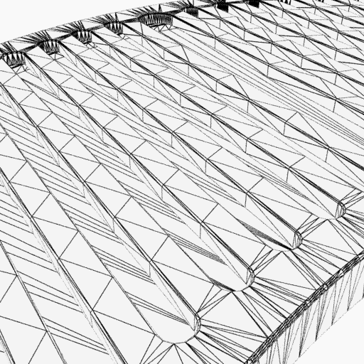
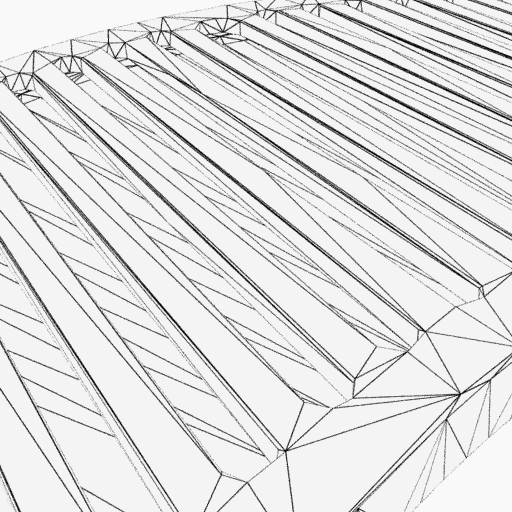
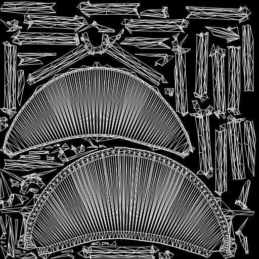

Mesh Processing
Introduction
SSCA mesh_processing module contains a list of operators that can be applied to a given target, such as a StageHandler or PrimHandler.
These operators can be chained in any order to build relevant and adapted processing workflow.
In industries involving 3d content, assets need to be prepared to fit pipelines requirements. With Operators like remeshing, decimation, mesh cleaning and even uv unwrap and repack SSCA provides the advantage to automatize asset optimization.
Simple Example:
from pathlib import Path
from substance3d.api import scene, mesh_processing as mp
# Path to the 3D file
my_3d_file = Path("meshes/mesh_file.obj")
# Build a scene from the 3D file
scn = scene.load(my_3d_file)
# Build a processing worflow (operators are configured via attributes)
ops = [mp.DecimationOp(), mp.UnwrapOp()]
# Run the workflow on the whole scene
mp.process(scn, ops)
Note
Operators process the given prim and its sub-tree. Run it on a Stagehandler to process all meshes of the scene.
CAD File Processing
Lets see, step by step, now how to optimize CAD files like .step ones.
1/ Build a scene from a CAD file
from substance3d.api import scene, export, primitive, mesh_processing as mp
from pathlib import Path
# Path to the CAD file
my_cad_file = Path("cad_input/my_cad_file.step")
# Create a scene
my_scene = scene.new()
# Create a group to host the imported cad file
mesh_group = primitive.xform(my_scene, "mesh_grp")
# Import cad file and set the tessellation level at 'medium'.
scene.add_reference(mesh_group, my_cad_file, prcTessLevel='medium')
Note
At this point, it is important to remember that, for CAD files import, prcTessLevel argument gives you the opportunity to set a tessellation level at import. CAD files tesselation level (‘prcTessLevel’) string arguments options are: “extraLow”, “low”, “medium”, “high”, “extraHigh”
Here are some visual examples of the different tessellation levels:
{kind=link}
{kind=link}
{kind=link}
{kind=link}
{kind=link}
2/ Clean mesh and optimize it for further processing
Now we have our StageHandler scene lets load some of the cleaning operators:
# Make sure vertices of every mesh are welded
verts_weld_op = mp.RemoveDuplicateVerticesOp()
# Fill potential mesh holes
close_mesh_op = mp.CloseSmallHolesOp()
# Refine CloseSmallHolesOp attribute
close_mesh_op.max_hole_size = 10 # max hole's boundary vertices number to fill
# Fix potential non-manifold edges and vertices
manifoldness_op = mp.ResolveNonmanifoldnessOp()
3/ Optimize mesh with decimation
decimate_op = mp.DecimationOp()
# Refine DecimationOp attributes
decimate_op.max_facets = 2000 # target number of facets in the decimated mesh
4/ Unwrap mesh UVs
# Seam and unwrap UVs
unwrap_op = mp.UnwrapOp()
# Refine UnwrapOp attributes
unwrap_op.packing.padding_size = 0.005 # padding between islands in UV space
unwrap_op.segmentation.chunks_elongation = 1.0 # Make sure islands are not too elongated
Note
Unwrap Operator automatically packs UV after Unwrap.
5/ Compute mesh processing operators on the scene.
mp.process(my_scene, [verts_weld_op, close_mesh_op, manifoldness_op, decimate_op, unwrap_op])
# Export the processed asset scene to a new file
export.fbx(my_scene, Path("mesh_output/processed_cad_file.fbx"))
Note
Each operator is executed one after the other, following the specified order.
Mesh Processing results
Decimation (right image) on the imported CAD file (left image):
 {kind=link}
{kind=link}
Unwrapped UVs after mesh decimation:
{kind=link}
Best Practices
Chain cleanup operators (duplicates / degenerates / short edges) before algorithms sensitive to topology (
decimation,remeshing,subdivision).Keep UV management steps (
UnwrapOporRepackOp) after topology edits to avoid invalidating UVs unnecessarily.Start with default attributes values, verify results with your renderer or mesh review and then edit operators attributes value as needed.